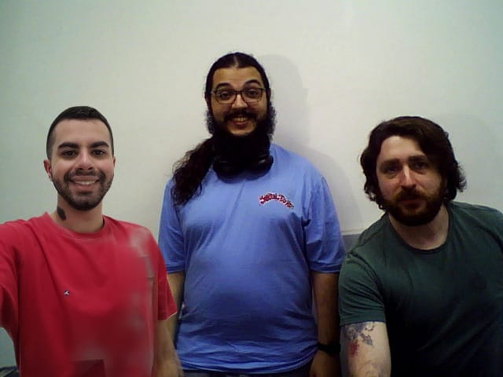

1. Introdução
Os objetivos do primeiro relatório eram:
- Iniciar os trabalhos com o OpenCV.
- Conhecer os comandos para visualizar e gravar imagens e vídeos.
- Gravar vídeos e imagens via webcam e mostrá-los no relatório.
2. Fundamentos Básicos
Para a execução deste laboratório, foi necessário configurar o ambiente de desenvolvimento com o OpenCV, uma biblioteca de visão computacional amplamente utilizada. Foram seguidos os seguintes passos:
- Instalação do OpenCV conforme as instruções fornecidas no arquivo "L1_parte1_instalar_opencv.txt".
- Leitura e estudo de tutoriais sobre exibição de imagens e vídeos.
- Manipulação de arquivos de imagem e vídeo, utilizando os exemplos fornecidos nos tutoriais da documentação do OpenCV.
Denotamos que a primeira parte destes itens não foi efetuada, dada a instalação já presente nas máquinas do laborátio utilizado, L401-1.
3. Materiais e Métodos
Os principais materiais e métodos utilizados neste laboratório foram:
- Biblioteca OpenCV para captura e manipulação de imagens e vídeos.
- Ambiente de desenvolvimento configurado com o compilador GCC e CMake para a execução dos exemplos em C++.
- Procedimentos experimentais que incluíram a leitura e exibição de imagens e vídeos, adaptação de código para uso com arquivos fornecidos, como a imagem messi5.jpg e o vídeo big_buck_bunny.mp4.
- Programas modificados para salvar arquivos de imagem e gravação de vídeos em diferentes cenários.
4. Resultados e Análises
Parte 1: Setup Inicial
A PARTE 1 do relatório não foi executada, pois as máquinas já possuíam os requisitos previamente instalados.
Parte 2: Aprendizado do OpenCV
Na PARTE 2, abordamos os itens A e B para aprendizado do uso do OpenCV. No item A, copiamos os exemplos fornecidos e, na função findFile, alteramos a imagem para o exemplo messi5.jpg. Para compilar o projeto, utilizamos os seguintes comandos no terminal (shell/bash):
$ cd /caminho_diretorio
$ cmake .
$ make
Nota: Esses comandos são executados em todas as compilações; portanto, não serão citados novamente. Após isso, executamos o arquivo gerado e conseguimos visualizar a imagem desejada.
No item B, trabalhamos com 5 exemplos de código, listados abaixo:
- video_read_from_file: Lê um vídeo de um arquivo e exibe o conteúdo.
- video_read_from_image_sequence: Lê uma sequência de imagens e as apresenta como frames de vídeo.
- video_read_from_webcam: Acessa a webcam do computador e exibe o feed de vídeo ao vivo.
- video_write_from_webcam: Captura o feed da webcam e salva o vídeo em um arquivo.
- video_write_to_file: Salva um vídeo lido de um arquivo para um novo arquivo de saída.
Dos exemplos citados, dois foram modificados: video_read_from_file e video_write_to_file, pois ambos trabalhavam com um arquivo de vídeo externo. O arquivo original foi substituído pelo vídeo big_buck_bunny.mp4, fornecido durante a atividade.
Esses exemplos demonstraram-se valiosos para entender o processo de leitura e manipulação de vídeos, além de permitir uma execução sem necessidade de interrupção forçada externa.
Parte 3: Obtenção de Fotos e Vídeos
a) Foto geral do grupo com a webcam: Todos os integrantes do grupo vestiram roupas de cores diferentes: vermelho, verde e azul, para destacar no ambiente. Um dos integrantes foi incluído posteriormente via software de edição.
Imagem do grupo:

b) Foto-montagem Avatar: A montagem de avatares foi feita usando editores de imagem, com cada integrante escolhendo um avatar representativo. A sequência dos avatares foi organizada da mesma forma que na foto geral do grupo.
Avatares:
Vídeos com Webcam
c) Gravação de vídeos:
- i) Vídeo com mudanças lentas de movimento:
- ii) Vídeo com mudanças rápidas de movimento:
- iii) Vídeos de objetos com mudanças lentas de movimento:
- iv) Vídeos de objetos com mudanças rápidas de movimento:
Abaixo, temos os códigos para tirar fotos e gravar vídeos, utilizados para os items que anexamos acima.
Nome do Script: tirar_foto.cpp
// Include Libraries
#include <opencv2/opencv.hpp>
#include <iostream>
// Namespace to nullify use of cv::function(); syntax
using namespace std;
using namespace cv;
int main()
{
// initialize a video capture object
VideoCapture vid_capture(0);
// Print error message if the stream is invalid
if (!vid_capture.isOpened())
{
cout << "Error opening video stream or file" << endl;
}
// Read the frames to the last frame
while (vid_capture.isOpened())
{
// Initialise frame matrix
Mat frame;
// Initialize a boolean to check if frames are there or not
bool isSuccess = vid_capture.read(frame);
// If frames are present, show it
if(isSuccess == true)
{
//display frames
imshow("Frame", frame);
}
// If frames are not there, close it
if (isSuccess == false)
{
cout << "Video camera is disconnected" << endl;
break;
}
//wait 20 ms between successive frames and break the loop if key q is pressed
int k = waitKey(20);
if (k == 's')
{
cout << "S key is pressed by the user. Capturing frame and stopping the video" << endl;
imwrite("foto_grupo.png", frame);
break;
}
}
destroyAllWindows();
vid_capture.release();
return 0;
}
O código acima foi feito baseado no código de exemplo "video_read_from_webcam.cpp", incluindo uma linha para salvar o frame atual como imagem, com nome "foto_grupo.png", quando o usuário pressionar a tecla 's'.
Nome do Script: gravar_video.cpp
// Include Libraries
#include <opencv2/opencv.hpp>
#include <iostream>
// Namespace to nullify use of cv::function(); syntax
using namespace std;
using namespace cv;
int main()
{
// initialize a video capture object, arg 0 means webcamera.
//To use stream from more cameras, just pass 1,2 and so on..
VideoCapture vid_capture(0);
// Acquire frame width and height with the help of get() method
// You can replace 3 and 4 with CAP_PROP_FRAME_WIDTH and CAP_PROP_FRAME_HEIGHT
// They are just enumerations
int frame_width = static_cast(vid_capture.get(3));
int frame_height = static_cast(vid_capture.get(4));
//define frame_size to be used in VideoWriter() argument
Size frame_size(frame_width, frame_height);
int fps = 20;
// Initialize video writer object
VideoWriter output("video_grupo.avi", VideoWriter::fourcc('M', 'J', 'P', 'G'), fps, frame_size);
while (vid_capture.isOpened())
{
// Initialize frame matrix to store frames
Mat frame;
//Initialize a boolean to check whether frames are present or not
bool isSuccess = vid_capture.read(frame);
// If frames are not there, close it
if (isSuccess == false)
{
cout << "Web camera is disconnected" << endl;
break;
}
// If frames are present
if(isSuccess == true)
{
//display frames
output.write(frame);
// display frames
imshow("Frame", frame);
// wait for 20 ms between successive frames and break the loop if key q is pressed
int key = waitKey(20);
if (key == 'q')
{
cout << "Key q is pressed by the user. Stopping the video" << endl;
break;
}
}
}
destroyAllWindows();
vid_capture.release();
output.release();
return 0;
}
O código acima é semelhante ao código de exemplo "video_write_from_webcam.cpp", alterando o nome do arquivo de vídeo salvo para "video_grupo.avi".
5. Conclusões e Comentários Finais
Os 3 integrantes do grupo conseguiram atuar e compreender os comandos executados e processos desejados, atingindo os objetivos de ler, capturar e/ou gravar imagens e vídeos com o auxílio do OpenCV.
De forma geral, a proposta foi bem tranquila. Nosso maior erro foi não ter gravado os vídeos em formato nativamente legível pelos navegadores, como mp4.
Assim, o trabalho mais pesado com o presente relatório foi a formatação da página onde todos os relatórios serão postados, tal que este define o formato que adotaremos para os próximos. Denotamos que dado que o conhecimento de HTML não é requisito para a disciplina nem será avaliado, utilizamos IA tão somente para alterações na template inicial - que carecia de upgrades estéticos.